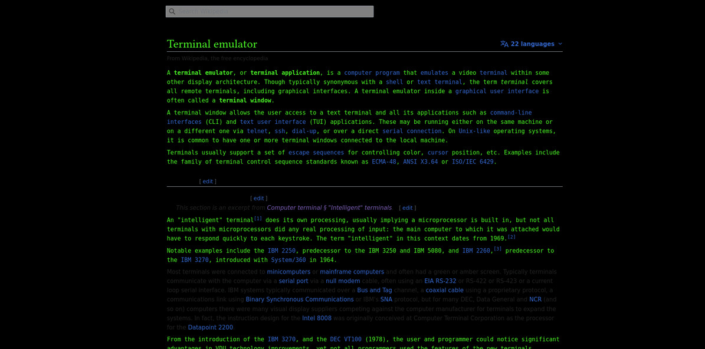

Lee Tusman
↩ Everyday
<
>
Title: WikipediaTerminal bookmarklet
Year: 2023
Medium: Javascript bookmarklet
Elevator pitch: Converts a Wikipedia articles into a modern Terminal view with green on black, no images, and a monotype font.
Download: bookmarklet.js↓

 ©opyleft
©opyleft